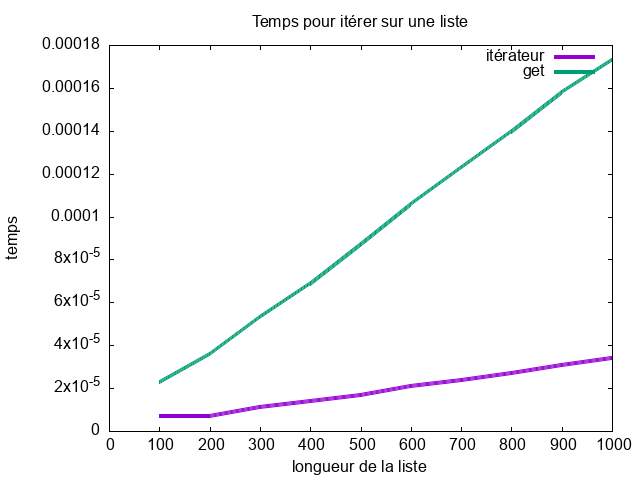

Tp_itérateurs
État du TP
Décrivez ici l'état d'avancement du TP.
Réponses aux questions
Indiquez ici les réponses aux questions posées dans le TP. Vous reprendrez le numéro de la section et le numéro de la question. Par exemple pour répondre à la question 3 de la section 2.4 vous indiquerez :
Etape à suivre pour execution des tests:
- Ouvrir le termial et se mettre dans le dossier
srccontenant le fichiertest.py. - Commande à executée:
python3 test.py
Première phase : la liste doublement chaînée
Q1:
La fonction __print_without_iterator_reversed est fait comme la première fonction fournie __print_without_iterator_forward, mais au lieu de commencer par la tete et puis avancer vers les autres Cell avec .next, on fait le contraire, on commence par la queue et on accède aux autres élements Cell avec /prev.
Le rendu du test 0 est comme suit:
Commande executée: python3 test.py
1 2 3 4
4 3 2 1
Deuxième phase : ajout des itérateurs
Q1:
Pour définir la classe ListIterator, on aura besoin des informations suivantes:
- head
- tail
self.list=list
self.tail=list.tail
self.head=list.head
Insertion avec des itérateurs
Q1 et Q2:
Après implémentation de la fonction add(self,value) qui permet de ajouter un élement avent l'éelement retourner par next(), l'implémentation permet de gérer les trois cas differents qu'on pourrai avoir lors de l'insertion:
- Insertion au début de la liste.
- Insertion à la fin de la liste.
- Insertion au milieu de la liste.
Le rendu du test 3 est comme suit:
--- test 3 ---
1
2
1 2 23 3 4 4 3 23 2 1 #Insertion en milieu de Liste
Q3:
Le rendu du test 4 et 5 est comme suit:
--- test 4 ---
1 2 23 3 4 45 45 4 3 23 2 1 #Insertion en fin de Liste
--- test 5 ---
0 1 2 23 3 4 45 45 4 3 23 2 1 0 #Insertion en début de Liste
Itérateurs à partir de la queue
Q3:
Le rendu du test 6 et 7 est comme suit:
--- test 6 ---
0 1 2 23 3 4 445 45 45 445 4 3 23 2 1 0
--- test 7 ---
45
445
4
3
23
2
1
0
Q5:
Le rendu du test 8 est comme suit:
--- test 8 ---
0 1 2 23 3 4 445 45 5 5 45 445 4 3 23 2 1 0
Q6:
Le choix d'implémentation de la fonction ordered_insert qui prend en paramètre la liste dans laquelle on va ajouter le nouveau element ainsi que la valeur de l'element à ajouter, est constitué des étapes suivantes:
1. On définit une boucle while avec deux condition:
- iterator.hasNext():L'element pointé a une next
- not trouve:La variable initialisé a False et qui devient True, quand l'element est trouvé est encore en False.
2. Si l'élement next de l'élement courant est supérieur à la valeur qu'on voudrait rajouter on déclare qu'on a trouvé la position où on veux ajouter l'element à la variable trouvé en changé sa valeur à True, et on sortira de la boucle pour exécuter l'instruction iterator.add(value) qui permet de rajouter l'element.
3. Sinon on exécute l'instruction iterator.next() pour itérer vers l'element suivant.
Le rendu du test 9 est comme suit:
--- test 9 ---
0 1 2 3 4 5 5 4 3 2 1 0
Suppression avec des itérateurs
Q1:
Oui l'implantation réalisée ici est compatible avec des opérations de suppression parce qu'avec cette implantation on a accès à tous les elements de la liste nécessaire pour les opérations de suppression comme next, prev....
Q3:
On a ajouté cette dernière contrainte pour éviter de faire un appel à la fonction previous() vers le vide et declancher une exception.
Q4:
Pour supprimer tous les élements d'une liste grâce aux itérateurs, il faudra éxecuter la suite d'instruction suivante:
iterator = l.get_listiterator()
while iterator.hasNext():
iterator.next()
iterator.remove()
Q5:
Le rendu du test 10 et 11 est comme suit:
1 2 3 4 4 3 2 1
--- test 10 ---
2 3 4 4 3 2
--- test 11 ---
2 3 3 2
Performance de l'accès au i-ème élément

Les résultats montrent que l'utilisation d'un itérateur pour parcourir une liste est plus rapide que l'accès direct aux éléments via une méthode get, en particulier lorsque la taille de la liste augmente. Cela met en évidence l'efficacité des itérateurs pour manipuler de grandes structures de données,